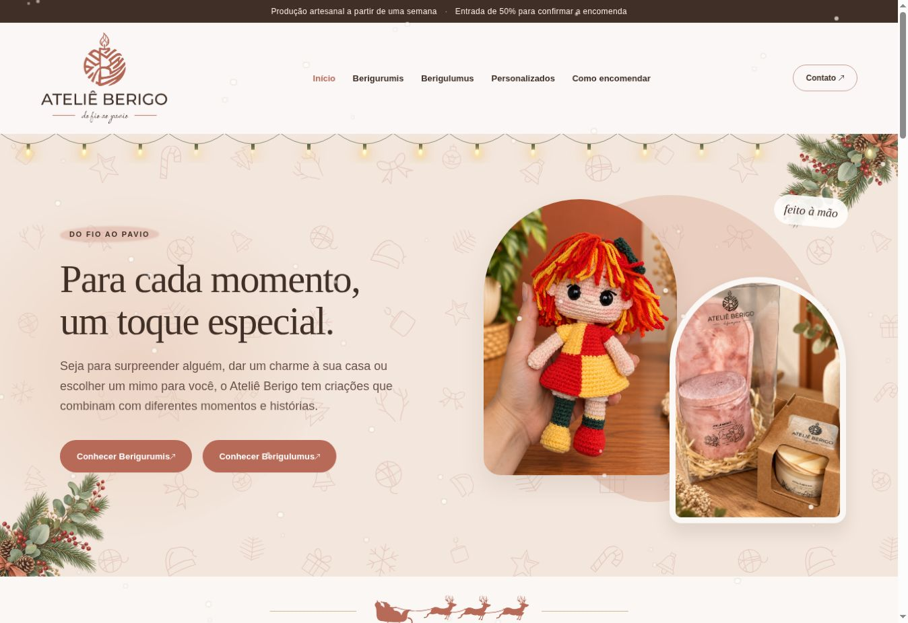
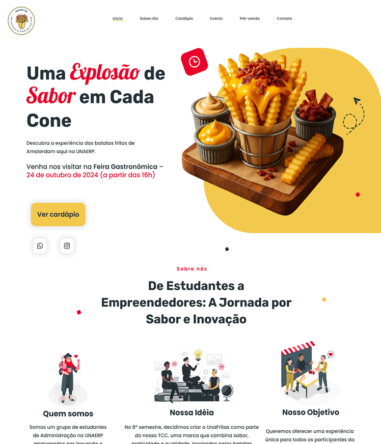
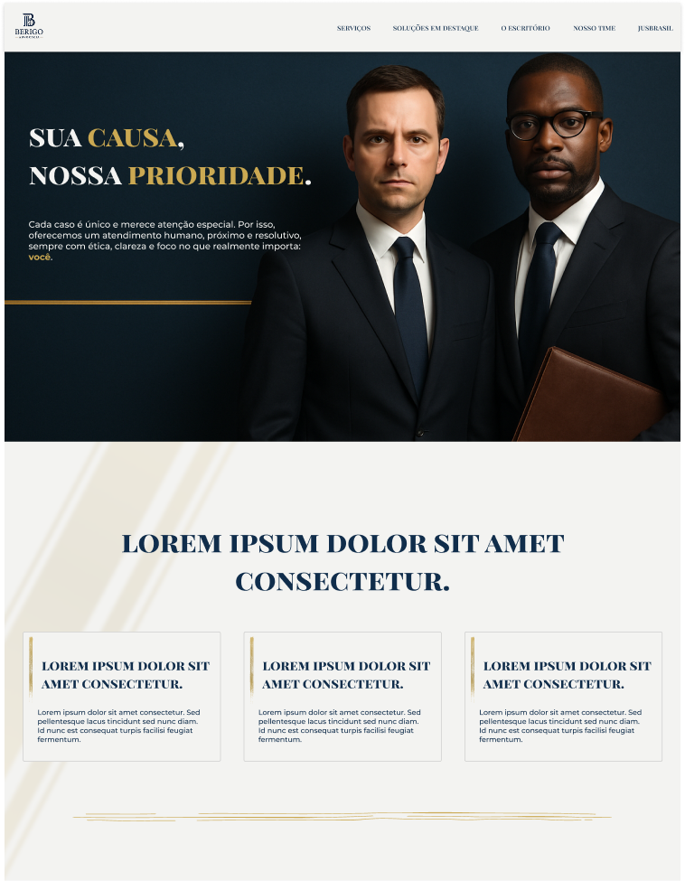
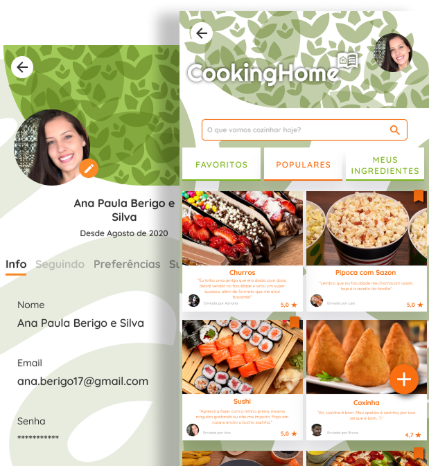

01 Sobre mim
Prazer, Ana.
Sou desenvolvedora Front-end, formada em Ciência da
Computação e com mais de 4 anos de experiência em
produtos digitais web e mobile.
Minha trajetória passa por Angular, React e
desenvolvimento Full Stack. Gosto de aproximar a
lógica do código do cuidado com cada detalhe da interface.
Organização, curiosidade e um olhar atento à usabilidade
fazem parte do meu jeito de trabalhar.
{ }
Da ideia ao detalhe.Com intenção em cada etapa.
02 Projetos selecionados
Ideias que ganharam forma.
Uma seleção de projetos pessoais e acadêmicos,
do primeiro conceito à interface.
WEB · CATÁLOGO DIGITAL

01 / 04
Identidade visual & catálogo artesanal
Em desenvolvimento
Ateliê Berigo
Site da minha marca de amigurumis e velas artesanais,
com catálogo das linhas Berigurumis e Berigulumus,
filtros por categoria e informações para encomendas.
WEB · LANDING PAGE

02 / 04
Marca & experiência digital
UnaFritas
Uma presença digital para uma marca de batatas
no cone, desenvolvida para a Feira Gastronômica
da UNAERP.
WEB · INSTITUCIONAL

Em desenvolvimento
Berigo Advocacia
Estudo de uma presença institucional, com
componentes reutilizáveis e layout responsivo
em Angular.
Sobre o projeto
+
MOBILE · APLICATIVO

Em manutenção
CookingHome
Receitas a partir dos ingredientes que você tem.
Aplicativo desenvolvido no meu TCC de Ciência
da Computação.
Sobre o projeto
+
03 Experiência
Código em contextos reais.
Aditek
Set 2023 — Set 2026
Analista de Desenvolvimento de Sistemas Júnior
Desenvolvimento e manutenção do DDO/iOrthoPay,
plataforma para profissionais da área odontológica.
Implementação dos módulos de Cursos e Feedback.
Interfaces responsivas, componentes reutilizáveis,
rotas e internacionalização em Angular.
Integração com Hasura/GraphQL e serviços em NestJS.
SS Telemática
Jan 2022 — Set 2023
Desenvolvedora Full Stack Júnior
Aplicações web e mobile voltadas à telemetria
e à gestão de frotas.
Criação de uma aplicação React para acompanhar
linhas, itinerários e veículos em mapa,
em tempo real.
Fluxo de avaliação de motoristas no app
Minhas Viagens SS, com testes de reflexo
e relatórios em PDF.
Dashboards, alertas e integrações com Node.js.
04 Formação & aprendizado
Uma base sólida.constante.
Ciência da Computação
Bacharelado · UNIFOR-MG
2018 — 2021
Técnico em Informática
SENAI
2016 — 2017
Técnico em Redes de Computadores
SENAC Minas
2014 — 2015
Aprendizado contínuo
Formações em HTML, CSS, JavaScript, responsividade
e mobile-first na Alura, além de cursos de Figma
e criação de landing pages.
05 Habilidades & tecnologias
As ferramentas por trásentrega.
/01
Front-end
Angular
React
TypeScript
JavaScript
HTML & CSS
Sass
Styled Components
/02
Integrações & back-end
APIs REST
GraphQL
Hasura
NestJS
Node.js
MySQL
/03
Mobile & design
Flutter
React Native
Figma
UX/UI
Responsividade
/04
Ferramentas & práticas
Git & GitHub
NPM
Metodologias ágeis
AWS
Azure